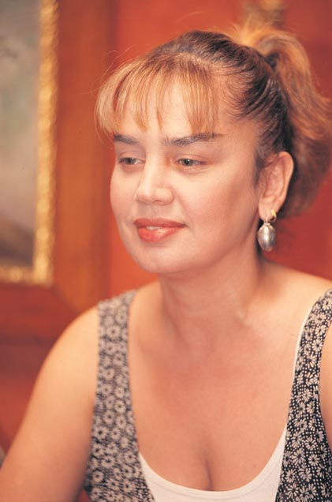

Sezen Aksu
Sezen Aksu (d. 13 Temmuz 1954, Sarayköy, Denizli), Türk pop müziğinin “Minik Serçe”si olarak bilinen besteci, söz yazarı ve yorumcudur. Türkiye’nin en üretken ve etkili sanatçılarından biri olan Aksu, müziğe olan katkılarıyla yalnızca bir sanatçı değil, aynı zamanda bir kültürel figür haline gelmiştir.
Hayatı ve Eğitimi
Denizli’de dünyaya gelen Sezen Aksu, müzikle küçük yaşta tanıştı. İzmir Kız Lisesi’nden mezun olduktan sonra İstanbul Üniversitesi Edebiyat Fakültesi'nde kısa süreli eğitim aldı. Müziğe olan tutkusu ağır basınca profesyonel müzik kariyerine yöneldi.
Müzik Kariyeri ve Başarıları
1970’lerin ortasında müzik dünyasına adım atan Aksu, kısa sürede kendine has yorumuyla dikkat çekti. Serçe albümü ile büyük başarı kazandı. 1980 ve 90'lı yıllarda yayınladığı albümlerle Türk pop müziğine yön verdi. Şarkılarında hem bireysel duygulara hem toplumsal meselelere yer verdi.
Yalnızca kendi şarkılarıyla değil, Tarkan, Sertab Erener, Levent Yüksel gibi birçok sanatçının kariyerine verdiği destekle de müzik dünyasında öncü oldu. Üretkenliği ve sanat anlayışıyla yeni kuşaklara ilham verdi.
Önemli Albümleri
- Serçe (1976)
- Firuze (1982)
- Sen Ağlama (1984)
- Gülümse (1991)
- Düğün ve Cenaze (1997)
- Bahane (2005)
- Biraz Pop Biraz Sezen (2017)
Sanat Anlayışı ve Etkisi
Sezen Aksu’nun müziği; pop, klasik Türk müziği, Anadolu ezgileri ve batı müziğini harmanlayan bir yapıya sahiptir. Şarkı sözlerinde aşk, hüzün, direniş ve umut gibi temaları işler. Müziğinde kullandığı samimi dil ve melodik yapı, onu nesiller arası bir bağ kuran sanatçı haline getirmiştir.
Sosyal Katkıları ve Aktivizmi
Aksu, kadın hakları, çevre sorunları ve toplumsal eşitlik gibi konularda da duyarlılığını ortaya koymuş bir sanatçıdır. Birçok yardım konseri düzenlemiş, genç sanatçıların yetişmesine katkıda bulunmuştur.
Sezen Aksu'dan Öne Çıkan Şarkı Sözleri
“Gülümse hadi gülümse / Umudunu yitirme sakın / Gülümse hadi gülümse / Hayat güzel, bir bak, gör artık”
– Gülümse